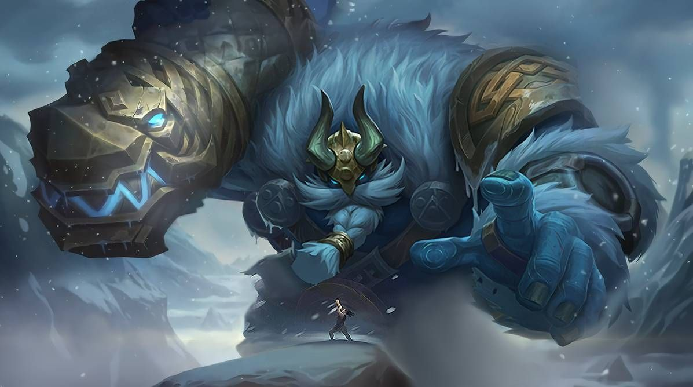
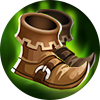
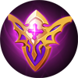
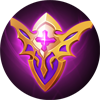

|  | |
|
Грок
|
|
|
Грок - герой танк. Его особенностью является навыки с огромным уроном
|
|
"Добро пожаловатьв мой замок, мой друг"
-Грок |
 |
Дата выхода: - 2 октября 2017 года |
|
| История героя: | |
| Грок принадлежит расе старшей, чем сама Земля, Гиганты имеют огромную связь с природой. Благодаря своим талантам, добрые гиганты обладают каменной кожей, которой они пользуются, в большинстве случаев, для своего безопасного сна, продолжительностью более полугода. После побуждения Грок обнаружил, что все его сородичи исчезли, а он остался в полном одиночестве. После этого, Грок отправляется в путешествие, чтобы найти свою расу и вернуть все на свои места. | |
Слабые и сильные стороны: Слабые:
Cильные:
Сборка героя:



 

Эмблемы
Выбор линии:
Так, как Грок - танк, в начале и до конца матча, он должен охранять своего главного дамагера
Пассивное: Дар предков
Когда Грок находится возле стены или башни, скорость передвижения увеличивается на 10%.Физическая защита, сопротивление магии и регенерация здоровья также увеличиваются на 26-180 (этот эффект увеличивается в зависимости от уровня).

1 Навык: Месть тирана
Хуфра натягивает повязку на руки, чтобы запустить себя в указанном направлении, нанося 50 (+1,5% физической атаки +10% макс ОЗ) единиц физического урона всем вражеским юнитам на пути. При перемещении на самое дальнее расстоянии или встрече с первым вражеским героем, Хуфра немедленно остановится и нанесет 50 (+1.5% дополнительной физической атаки +10% макс ОЗ) единиц физического урона врагам поблизости, а затем оглушает их.

2 Навык: Прыгающий мяч
Хуфра использует бинт, чтобы обернуться в волшебный прыгающий шар, увеличивая свою физическую и магическую защиту на 75%. Враги, пытающиеся использовать навыки перемещения возле Хуфры, будут оглушены. Каждый раз, когда магический прыгающий шар ударяется о землю, он наносит 30 (+1,5% дополнительной физической атаки + 8% максимального здоровья противника) магического урона врагам поблизости и уменьшает их скорость движения

Ультимативная способность: Ярость тирана
Хуфра стягивает все вражеские цели вокруг себя , нанося 300 (+100% общей физической атаки) единиц физического урона и замедляя их на 1,25 секунды. Если враги ударятся о стену, им будет нанесен дополнительный физический урон, равный 150% урона от этого навыка, также они будут оглушены на 1 секунду.

|